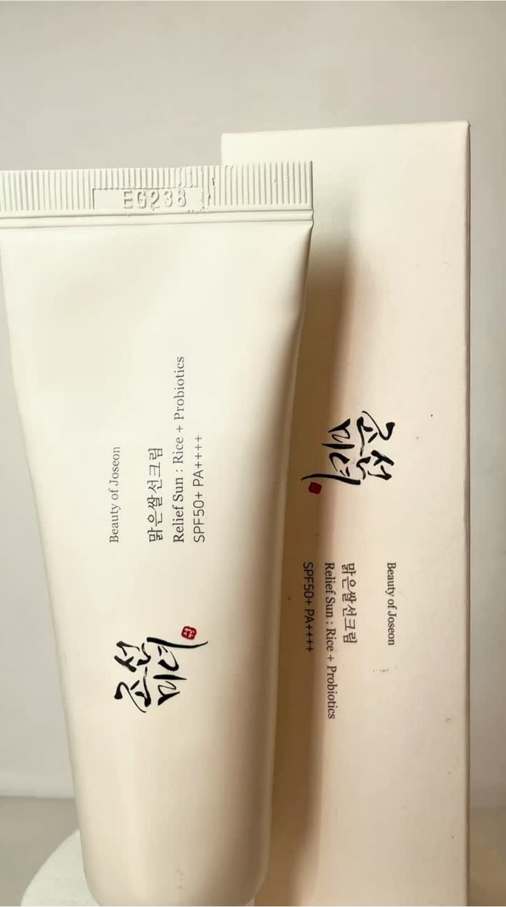

Rituals — Amsterdam
A Cloud of Comfort
Texture · Gesture · Sensory experience
Mettre en scène la transformation du produit à travers son usage : pression, expansion de la mousse, contact avec la peau. Le geste construit une expérience visuelle douce et immersive.
Visual codes
Soft light · Foam texture · Close-up · Gesture · Tactility

Beauty of Joseon
Light on Skin
Texture · Light · Everyday ritual
Une approche plus minimaliste, centrée sur la texture, l’application et le fini sur la peau. La lumière devient un outil de narration pour traduire légèreté, confort et transparence.
Visual codes
Natural light · Skin detail · Texture · Minimal framing · Product focus
Projets spéculatifs — non commandés par les marques.